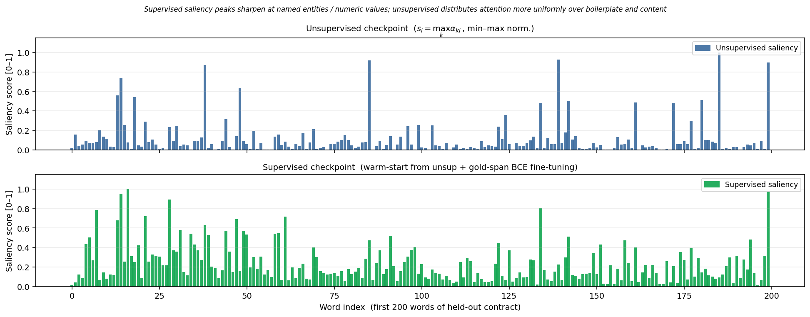
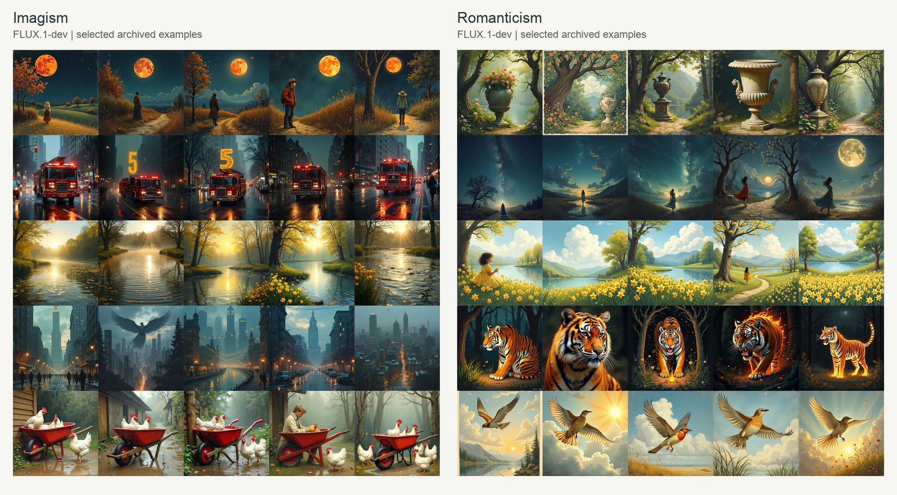
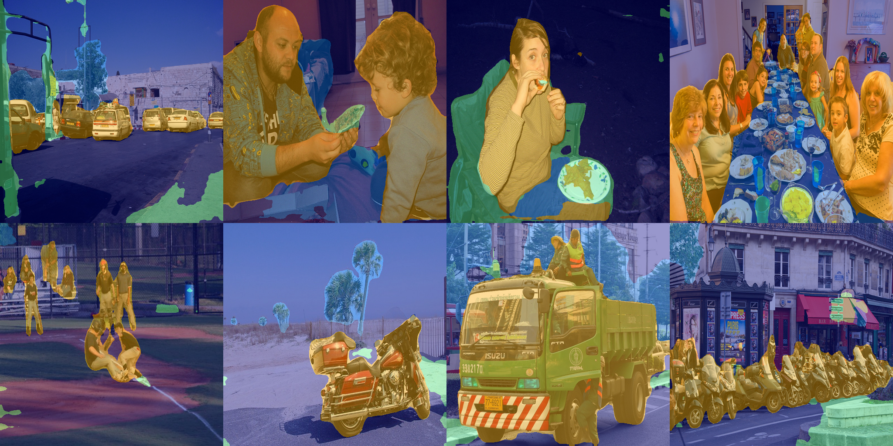

Projects
Open-source tools, a hackathon build, summer research, and course projects.
DeepCrew
A Claude Code or Codex lead splits a coding job among Claude Code agents running on DeepSeek. Each agent changes only the files its task lists, and commands beyond routine work wait for approval.
Agent Skill Firewall
An egress proxy that allows, holds, or blocks each request a third-party agent skill makes.
FinGuard
An AI money agent that shows where every number came from and asks for a one-time code before it pays.
Text-KEN: kernel-based novelty scores for text
Text-KEN extends the kernel entropic novelty (KEN) score from images to text. I built the pipeline that embeds two text collections and scores how novel one is relative to the other, with no classifier to train.
MemSlot: long-document retrieval and compression
MemSlot treats long-document question answering as a retrieval and compression problem before OCR. I built the neural retriever, document rendering, pruning baselines, and evaluation notebooks.


Poetry and image variation
Images generated from Imagist poems varied less than images from Romantic poems: a CLIP-based score of 0.12 against 0.28 with FLUX.1-dev, five poems per group. I generated images with FLUX and Stable Diffusion and compared the scores in Python.


Movability segmentation
This project groups objects by how they can move, then predicts those classes across a scene. I adapted a semantic-segmentation model and built the data remapping, preprocessing, training, and checkpoint-inference pipeline. In the course report it reached 0.638 validation mIoU at 58 FPS.

